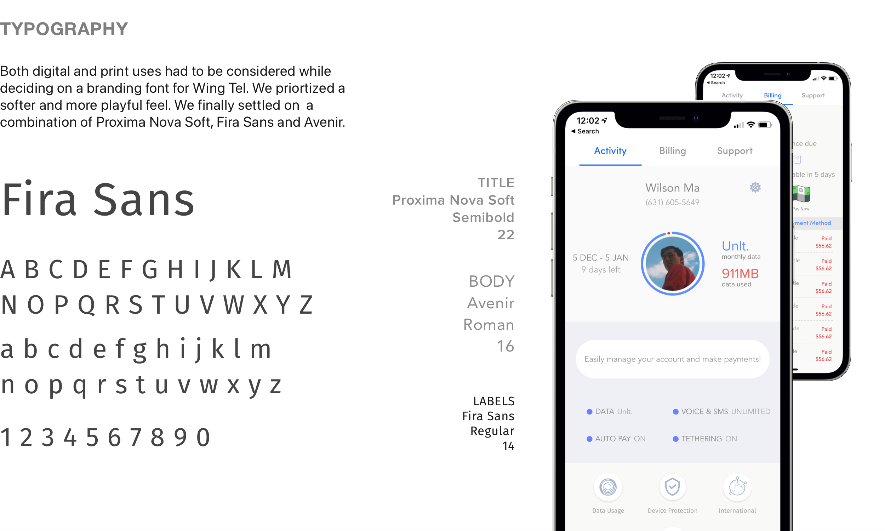
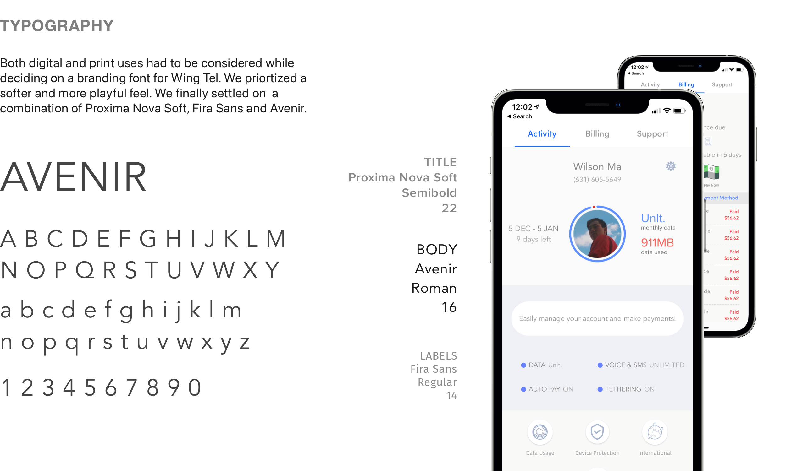
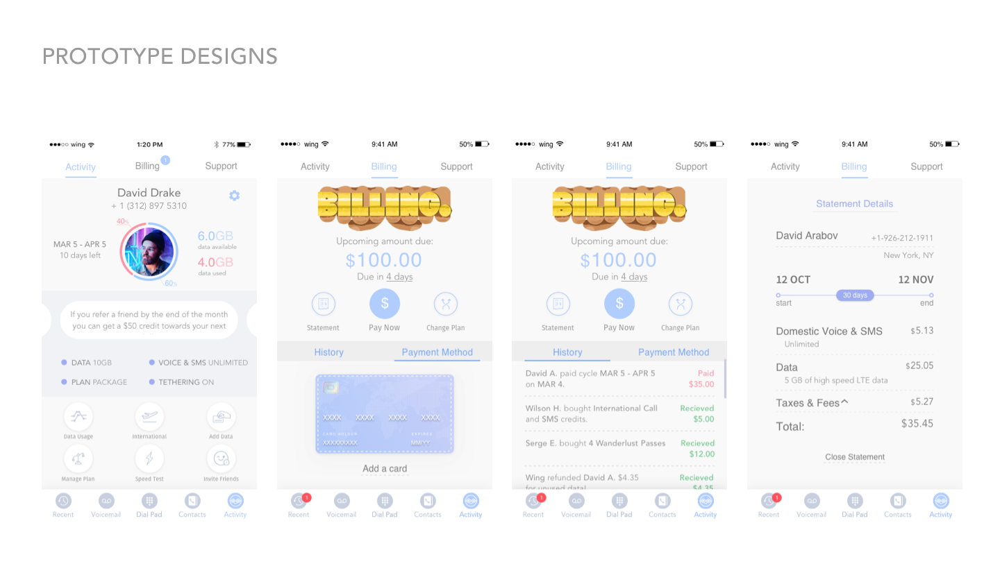
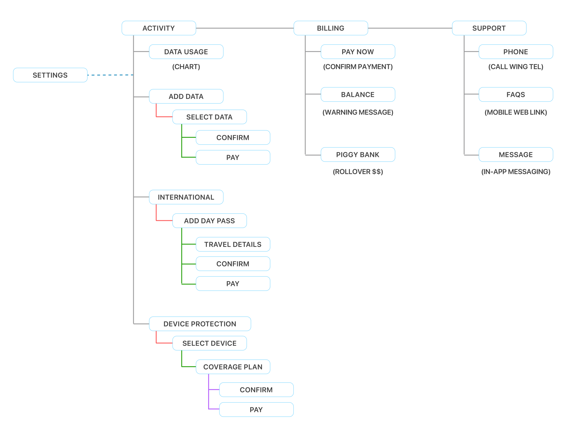
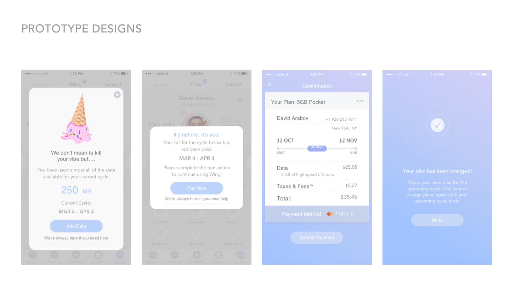
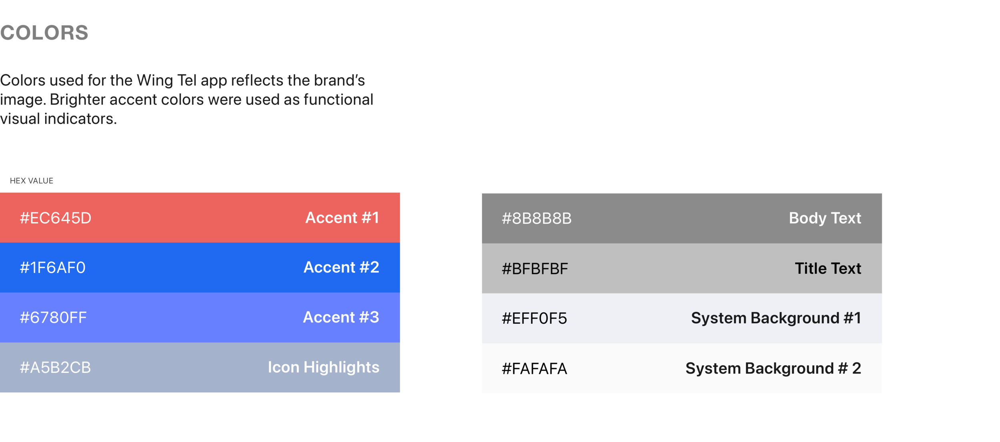
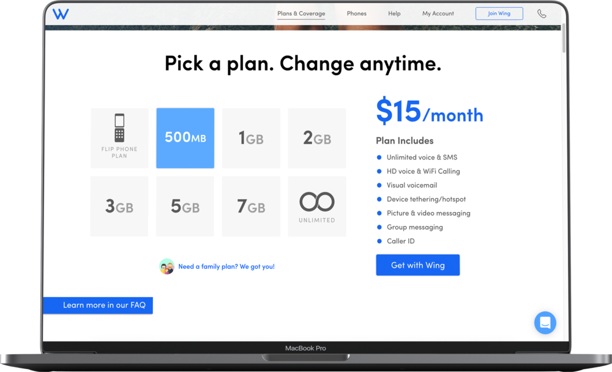
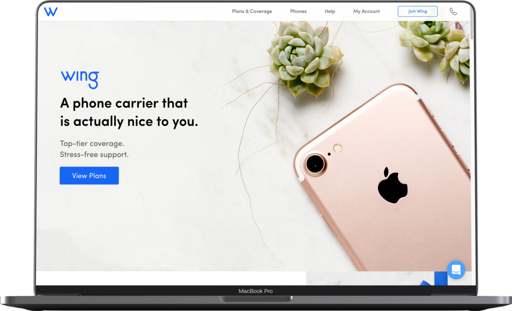

Impact
Building Product Systems Before I Had the Vocabulary
Wing Tel was an MVNO — a Mobile Virtual Network Operator offering transparent mobile plans. As the sole designer, I built every layer of the product from scratch: brand, app, web dashboard, and a component library. The thinking I developed here — reusable components, state systems, information hierarchy — is the same thinking I now apply at enterprise scale.
Visual Showcase
Mobile App, Brand System & Design Thinking








Design Process
How I Actually Built It
Telecom Has Unique Complexity
Users primarily manage accounts on mobile. That meant every interaction had to be instantly scannable:
- Usage at a glance: data/minutes/texts on home screen
- Quick actions: top-up and plan changes in 2 taps
- Transparent billing: clear breakdown of charges, no hidden fees
- Self-service: reduce support calls through intuitive design
Component Architecture From Day One
Even without the formal language of design systems, I built with reuse in mind:
- Buttons: 3 types, 4 states each
- Form inputs: text, dropdown, radio, checkbox
- Cards: usage cards, plan cards, billing cards
- Navigation: tab bar, header nav
- Status indicators: badges, progress bars, alerts
Engineers could reuse components across features without custom design work — accelerating development and maintaining consistency as the product grew.
Complex Data, Simple Interface
Telecom account management is inherently complex: usage over time, multiple lines, billing history, security. I designed patterns that handled this:
- Card-based layouts for scannable information
- Progress bars for usage visualization
- Color-coded status: green = safe, yellow = warning, red = limit
- Clear CTAs for the most common actions
When there's nothing to inherit, every decision is yours. You learn to establish design direction without a brand, build systems from first principles, make confident calls with incomplete information, and communicate rationale to engineers and founders who need to trust your judgment. It's the hardest and most formative design experience I've had.
Learnings
What This Work Taught Me
Starting from zero teaches you things working on mature products doesn't
There's no existing system to inherit, no design lead to check with, no brand guidelines to reference. Every decision is yours — which is uncomfortable until it isn't. Wing Tel is where I learned to make confident design calls with incomplete information, because waiting for certainty wasn't an option on a 4-person team with 3 months of runway.
Domain Knowledge Matters
Telecom UX has unique constraints: regulatory requirements around terms and privacy, technical complexity around network status and data throttling, customer expectations around reliability and billing clarity. Learning a domain deeply — not just its UI patterns but its actual business logic — makes you a better product designer in any domain.
Founding Team Dynamics
As a founding designer, you're not just executing — you're influencing product strategy. Communicating design rationale, prioritizing features with limited resources, knowing when to push back and when to ship fast: these are strategic skills that sit alongside craft. Wing Tel is where I first learned how to work at the intersection of design and product decision-making.